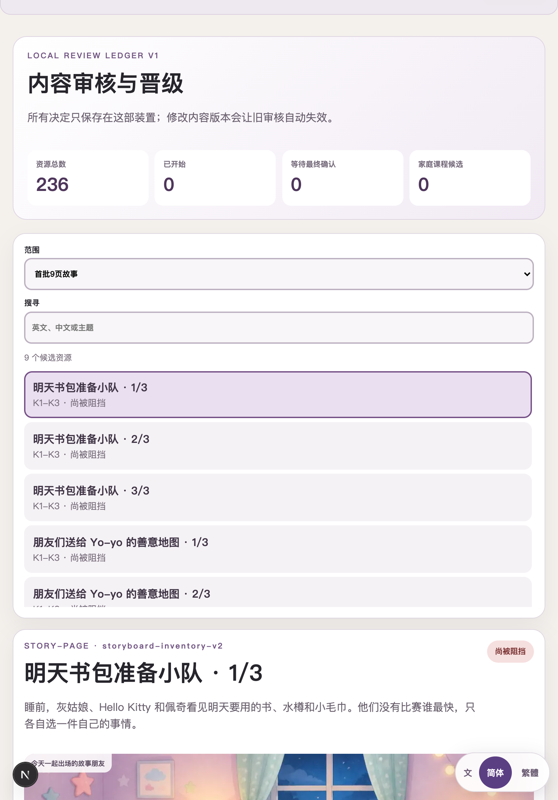
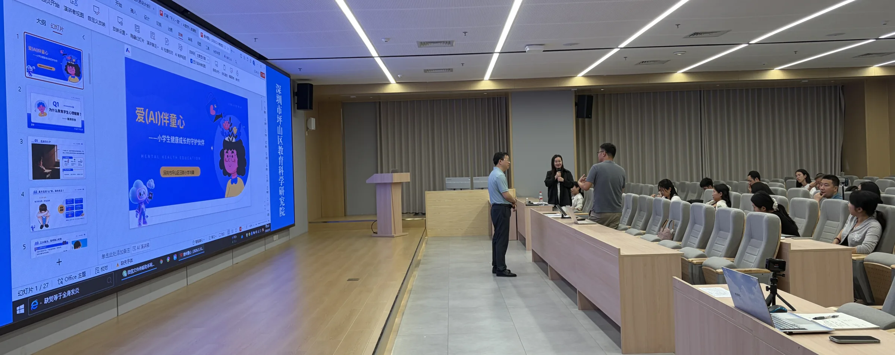
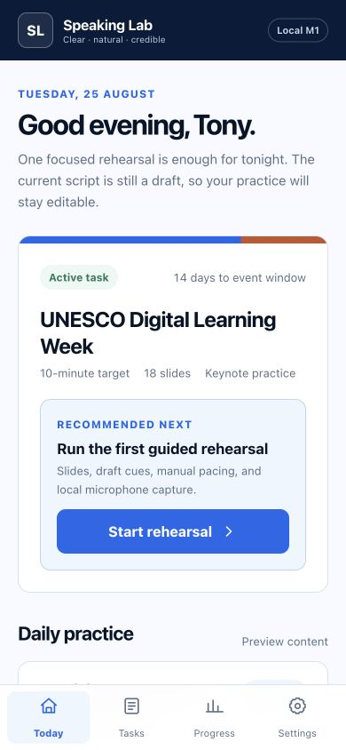
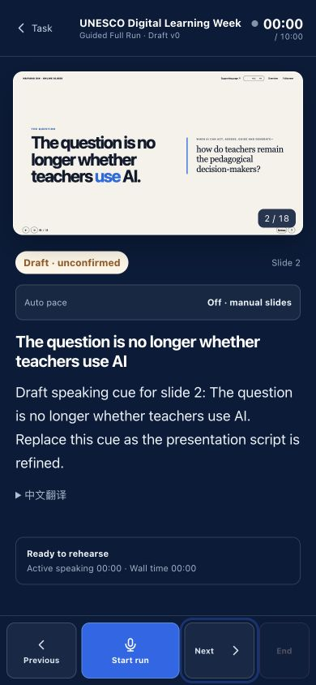

广东职业院校人工智能通识教育分享 · 2026
当工作开始由人与 AI 共同完成
职业教育需要怎样的 AI 通识课
从企业用人、教育实践与技术演进三个视角，讨论真实任务、能力证据与责任边界
辛海洋可可乐博 CEO
2026 年 8 月 28 日深圳城市职业学院（深圳技师学院）
人AI结果
01
第一章
实践改变了
什么判断
第一章 · 第一个故事
YoYo English Tutor，
从女儿的兴趣出发
女儿喜欢小猪佩奇、库洛米和迪士尼公主。我希望以她愿意进入的角色世界为起点，降低英语开口的阻力，并把勇气、友善与坚持融入学习内容。
原型的目的把儿童兴趣、英语练习与家庭培养目标组织成一段可持续的学习体验。
家庭内部学习原型；角色与内容选择由家长持续判断。

第一章 · 第一个故事的反思
实现速度提高以后，专业判断与人工审查更加重要

把“能够运行”推进为“适合孩子使用”，需要多类专业标准共同进入设计和修订。
AI 系统扩大了制作能力，但专业资格、人工审查与最终责任仍由人承担。
第一章 · 教师创造者实践
教师智能体设计已经进入规模化培训与共创现场
1,000+深圳四个区及合作学校
教师培训实施触达
教师培训实施触达



照片记录教师设计、调试与展示智能体的过程；“1,000+”表示实施触达，不代表所有参与者均已持续使用，也不构成学习效果证明。
第一章 · 教师创造者实践
教师把隐性的教学判断，转化为可测试、可修订的智能体规则
培训重点的变化从操作某个工具，转向设计 AI 系统参与教学的方式
教师的专业经验由个人默会知识转化为可讨论、可运行、可复核的设计对象。
来源：教师智能体创造项目的培训流程与研究总结；创建、测试与修订记录属于过程证据，不等同于学生学习成效。
第一章 · 从实践到交流
规模化实践形成研究证据，也获得了一次国际交流机会



个人实践补充为了准备英文分享，我把自己的演讲材料做成了逐页排练工具。
任务首页、逐页提示与录音入口组成同一条排练流程；内容与表现仍由本人审看和修订。
第一章 · 企业价值
当使用者也能创造，企业价值从一般生产转向判断、采用与长期运行
制造业的“微笑曲线”为知识工作的价值迁移提供一个历史参照
历史参照 · 1992产业附加价值
附加价值
研发／智财组装／制造品牌／服务
当组装日益标准化，研发与品牌服务两端呈现较高附加价值；制造仍是产业基础。
本次演讲的延伸 · 概念示意人的稀缺价值密度
稀缺价值密度
问题与需求定义生成与制作验证、运行与责任
一般生成制作的相对稀缺性下降；高难度工程、专业判断与现场实施仍然重要。
AI 压缩的是一般生产成本，不是问题判断与结果责任。
左图：施振荣“微笑曲线”，1992；据 Acer 与智荣基金会资料重绘。右图：演讲者基于 AI-native 工作实践提出的概念模型，2026。
第一章 · 企业协作
企业要交付新的价值，协作必须减少上下文在接口处的损耗
岗位接力的简化示意接口增加，关键信息需要反复转译
→→→→→→
若每次完整保留 90% 的关键上下文0.96 ≈ 0.53六次交接后，完整保留比例约为 53%
同概率、相互独立的概念假设；用于说明累积损耗，不是团队实测数据。
团队级端到端能力覆盖共同确保结果，关键判断具名负责
问题方案制作验证运行
成员 A专业主责
成员 B专业主责
成员 C专业主责
共同底座目标状态接口证据完成标准
能力重叠不是岗位同质化，而是让相邻角色能够理解约束、发现偏差并完成交叉复核。
算式为条件化示意；协作判断参考共享心智模型、交互记忆、专长协调与跨职能团队研究。AI 扩大个体覆盖范围属于实践推演。
第一章 · 阶段性结论
三个故事共同指向一种闭环型 T 型人才结构
横向不再只是知识广度，而是理解并参与完整任务链；纵向仍是依据专业标准作出关键判断并承担责任。
AI 扩大个人的横向覆盖，专业纵深决定责任边界；团队以不同专长相互加强和收尾。
理解任务组织执行验证结果说明责任
差异化专长专业知识工艺标准现场经验关键判断
第一章 · 闭环型 T 型人才
横向能力意味着理解完整生命周期，而不是浅尝更多工具
探索理解问题
比较方案
比较方案
构建形成可运行成果
优化修正错误
降低复杂性
降低复杂性
扩展适配用户
增加情境
增加情境
维护保持安全、可靠
与成本可控
与成本可控
基础覆盖
＋
专业专长
＋
专业专长
五类工作用于描述成果从问题走向长期运行的过程，不对应五个固定岗位。
02
第二章
企业依据什么决定
一段工作可以交给谁
第二章 · 现实背景
宏观指标只能界定变化背景，课程设计仍需回到具体职业任务
规模以上高技术制造业增加值增速
31.2%工业机器人产量增速
全球就业处于对生成式 AI 有某种潜在暴露的职业
3.3%全球就业处于最高暴露梯度
广东数据描述产业技术条件，ILO 数据估计职业暴露范围；二者均不能直接测量本地岗位增减或课程效果。
来源：广东省统计局《2024 年广东经济运行基本情况和特点》；ILO–NASK, Generative AI and Jobs: A Refined Global Index of Occupational Exposure, 2025。
第二章 · 工作单位
AI 工作系统开始围绕目标执行多步任务，并保存状态、接受检查
聊天回答一个问题一次性交互
→单一工具完成一个步骤局部产出
→AI 工作系统持续执行、保存状态、接受检查并修正面向可验证结果
设备检查示例读取工单 → 检索标准 → 形成检查清单 → 记录异常 → 等待专业复核
工作单位扩展为“一段任务”后，人的职责也随之扩展到任务组织与过程监督。
第二章 · 授权边界
任务应依据可观测性、可检查性与后果风险分配不同授权
系统可在规则范围内执行，并保留过程记录。
系统完成初步工作，由具备资格的人独立检查。
人保留决策、批准、接管和最终责任。
自动化程度不是成熟度指标；能够说明授权范围、停止条件和责任主体，才是系统能力的一部分。
第二章 · 企业判断
企业判断人才的关键，在于能否可靠委托一段真实工作
可生成不等于可交付；可交付还需要专业判断、测试、现场采用和责任。
第二章 · 阶段性结论
可靠委托需要任务、边界与证据同时成立
企业判断的不是一个人是否“会用 AI”，而是他能否在明确边界内，借助 AI 系统稳定完成一段真实工作，并对结果作出说明。
03
第三章
课程需要留下
什么证据
第三章 · 长期主线
平台与工具持续变化，课程应长期积累可迁移的任务能力
大模型智能体提示词知识库工作流可复用技能多模态自动化模型平台
长期能力主线理解任务用户、情境、标准与边界组织执行工具、信息、分工与过程验证结果专业标准、测试与修正说明责任来源、决策、权限与风险
工具和应用可以更替；可治理的任务状态、过程证据、评价标准与教师经验需要连续积累。
第三章 · 建设阶段
第一阶段建立课程基础，第二阶段进入真实任务验证
“1+N”课程结构六个成长情境项目教学资源与多元评价课程中心迭代机制
明确用户、现场与验收标准保留四类能力证据设置检查点、异常与人工接管引入行业约束与运行证据
建议从少量专业任务启动共同定义任务 → 两轮教学试验 → 比较证据 → 修订任务与量表第二阶段属于待验证的建设计划，不将预期成果表述为已经完成的成效。
依据：深圳城市职业学院（深圳技师学院）《AI 通识课程建设汇报》，2026-08-28，第 18、25—34 页。
第三章 · 课程边界
32 学时也应安排一次完整的真实任务闭环
明确用户、现场、约束与验收标准
配置系统、资料、人员和工作顺序
测试正常路径、边界情形与失败条件
记录决策、权限、风险与人工接管
工具数量不是课程覆盖度；学生留下的能力证据才是。
第三章 · 专业适配
职业院校的实践优势，在于让共同能力进入不同专业任务
读取工单与传感记录，检索标准，形成检查步骤；涉及设备安全的结论由专业人员复核。
理解品牌与平台规则，生成多版本内容，检查版权、事实与视觉一致性。
整理事实，匹配服务规则，形成初步建议；投诉、权益与高影响决定转由人工处理。
通用模型提供通用能力；专业价值来自领域标准、过程证据与明确责任主体。以上任务仅为示例，须由相应专业校准。
第三章 · 能力证据
可靠的能力判断，需要四类证据相互印证
验证证据应包含边界测试、失败记录与修正过程；责任证据需要说明系统超出授权时由谁接管。
04
第四章
学校与企业
怎样共同验证
第四章 · 责任边界
学校负责育人判断，企业提供真实任务与工程约束
学校决定课程与教学
育人目标课程标准教学组织评价与治理
共同完成把行业任务转化为
可教、可学、可评价的项目
可教、可学、可评价的项目
任务选择教学转化试点设计证据复核迭代修订
企业与行业提供任务与工程条件
代表性任务工程约束验收标准运行证据
共同建设不等于责任混同；育人目标、教学评价和学生数据治理仍由学校负责。
第四章 · 最小试点
九十天试点的首要目标，是形成一套可复核的任务、教学与评价证据
试点起点一项代表性任务 · 一组真实约束 · 一套共同证据 · 一次联合复盘
用户、场景、专业约束、AI 授权和交付标准清楚。
课时安排、教师支持、学生过程、异常与修订可追踪。
结果、过程、验证和责任证据具有一致的最低要求。
说明可复制部分、专业差异、失败条件与下一轮调整。
先建立共同语言和可比较证据，再讨论扩大规模与后续协作。
结论 · 交给圆桌
从“会用 AI”走向
“能够被委托一段真实工作”
未来人才需要定义问题、组织人机协作、验证结果，并在必要时接管和负责。